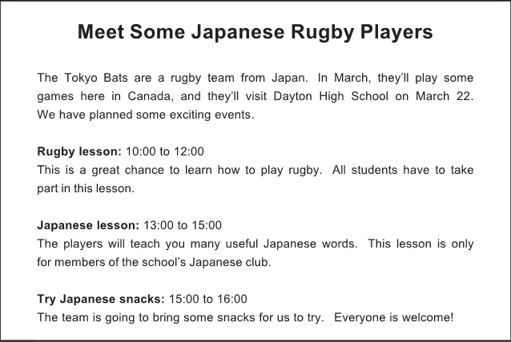
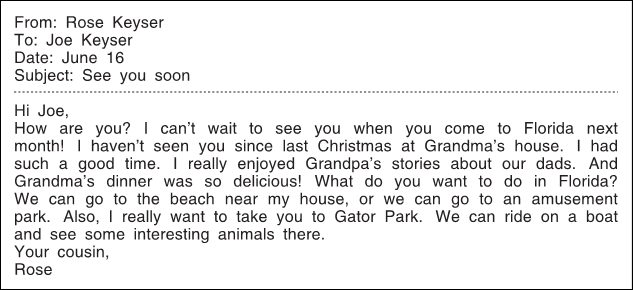
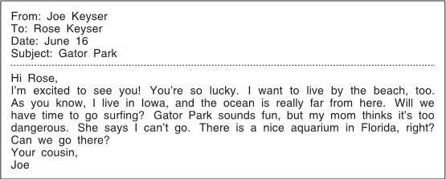
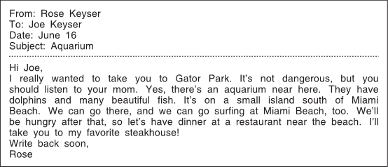
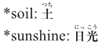
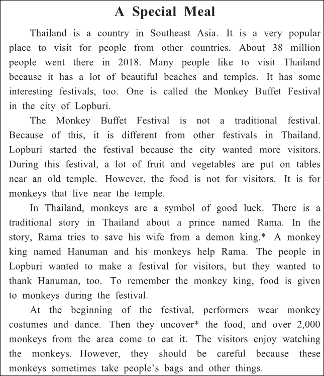
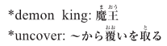

英語検定 ３級(2021年第2回No.3) 残り時間が0になると、自動的に採点します。 時間内に終了する場合は、一番下の「採点する」のボタンを押してください。 残り時間： 分 秒 No 英語検定３級筆記(2021年第2回) 3A 次の掲示の内容に関して、(21)と(22)の質問に対する答えとして 最も適切なもの、または文を完成させるのに最も適切なものを、 解答欄の1～4の中から一つ選びなさい。  No21 What will happen in the morning on March 22? 1 The Tokyo Bats will study English. 2 The Tokyo Bats will leave Canada. 3 The students will fly to Japan. 4 The students will learn about playing rugby. 答え： 1 2 3 4 No22 Who can take part in a Japanese lesson? 1 Students who have been to Japan. 2 Students who bring some snacks. 3 Students who are in the Japanese club. 4 Students who are in the rugby club. 答え： 1 2 3 4 3B 次のEメールの内容に関して、(23)から(25)までの質問に対する答えとして最も適切なもの、 または文を完成させるのに最も適切なものを、解答欄の1～4の中から一つ選びなさい。     No23 Next month, Joe will 1 or 2 or 3 or 4 1 stay at his grandparents’ house. 2 look for some Christmas presents. 3 visit Rose in Florida. 4 move to Iowa. 答え： 1 2 3 4 No24 Why won’t Joe go to Gator Park? 1 His mother thinks it is a dangerous place. 2 His mother thinks it is too far away. 3 He thinks it is too boring. 4 He has already been there with his mother. 答え： 1 2 3 4 No25 What will Rose and Joe do after they go surfing? 1 Have a picnic on the beach. 2 Eat dinner at a steakhouse. 3 Visit a small island. 4 Go swimming with dolphins. 答え： 1 2 3 4 3C 次の英文の内容に関して、(26)から(30)までの質問に対する答えとして最も適切なもの、 または文を完成させるのに最も適切なものを、解答欄の1～4の中から一つ選びなさい。   No26 Why do many people from other countries visit Thailand? 1 There are many popular zoos there. 2 There are nice beaches and temples there. 3 They want to make food at the festivals there. 4 They want to learn to write traditional stories. 答え： 1 2 3 4 No27 The Monkey Buffet Festival is different from other festivals because 1 or 2 or 3 or 4 1 it is not a traditional one. 2 fruit is given to visitors in Lopburi. 3 it is celebrated in many cities in Thailand. 4 it is the only traditional festival in Thailand. 答え： 1 2 3 4 No28 Who was Rama in the traditional story? 1 The wife of Hanuman. 2 A demon king. 3 A monkey king. 4 A prince. 答え： 1 2 3 4 No29 How does the Monkey Buffet Festival start? 1 Some dancers with costumes perform. 2 Visitors wear monkey costumes. 3 People sing songs for the monkeys. 4 Monkeys are brought to the temple. 答え： 1 2 3 4 No30 What is this story about? 1 The oldest city in Southeast Asia. 2 The history of Thailand. 3 An interesting event in Thailand. 4 A temple built by monkeys. 答え： 1 2 3 4







 英語検定 ３級(2021年第2回No.3)
英語検定 ３級(2021年第2回No.3)